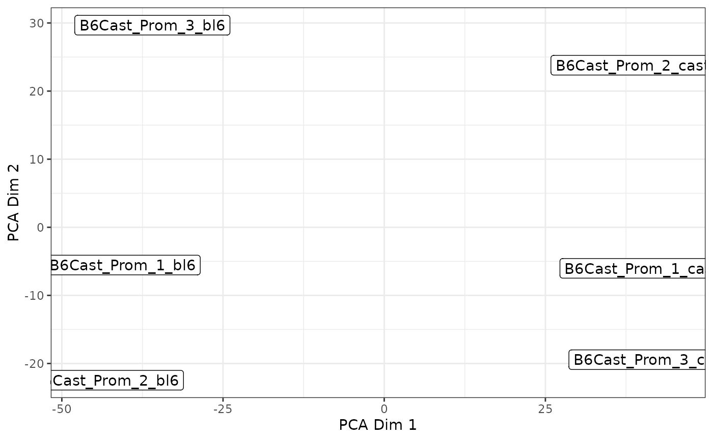

Plot multi-dimensional scaling plot using algorithm of BiocSingular::runPCA(). It is recommended this be done with the log-methylation-ratio matrix generated by bsseq_to_log_methy_ratio().
Arguments
- x
the log-methylation-ratio matrix.
- plot_dims
the numeric vector of the two dimensions to be plotted.
- labels
the character vector of labels for data points. By default uses column names of x, set to NULL to plot points.
- groups
the character vector of groups the data points will be coloured by.
- legend_name
the name for the legend.
Examples
nmr <- load_example_nanomethresult()
bss <- methy_to_bsseq(nmr)
#> [2025-04-18 07:30:12] creating intermediate files...
#> [2025-04-18 07:30:12] parsing chr11...
#> [2025-04-18 07:30:12] parsing chr12...
#> [2025-04-18 07:30:12] parsing chr18...
#> [2025-04-18 07:30:12] parsing chr5...
#> [2025-04-18 07:30:12] parsing chr7...
#> [2025-04-18 07:30:12] parsing chrX...
#> [2025-04-18 07:30:13] samples found: B6Cast_Prom_3_cast B6Cast_Prom_3_bl6 B6Cast_Prom_2_cast B6Cast_Prom_2_bl6 B6Cast_Prom_1_cast B6Cast_Prom_1_bl6
#> [2025-04-18 07:30:13] creating bsseq object...
#> [2025-04-18 07:30:13] reading in parsed data...
#> [2025-04-18 07:30:13] constructing matrices...
#> [2025-04-18 07:30:13] done
lmr <- bsseq_to_log_methy_ratio(bss)
plot_pca(lmr)
